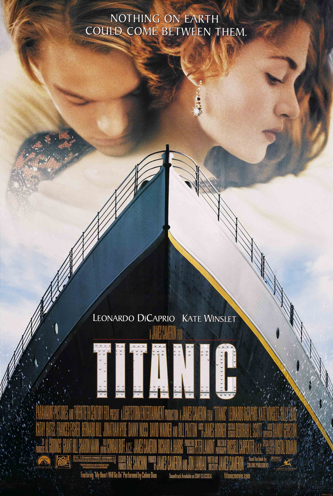
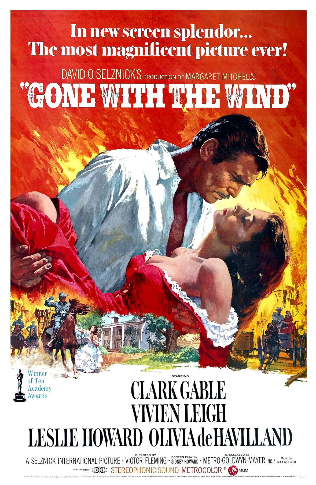
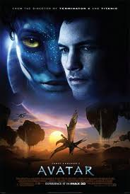
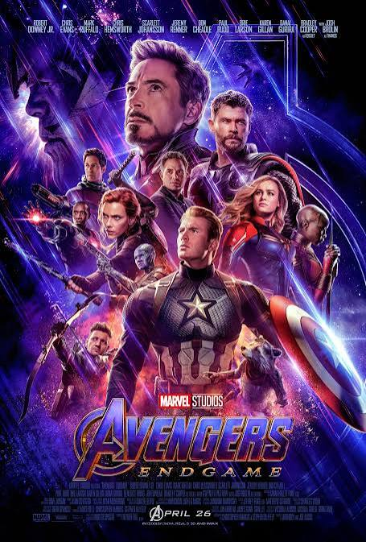
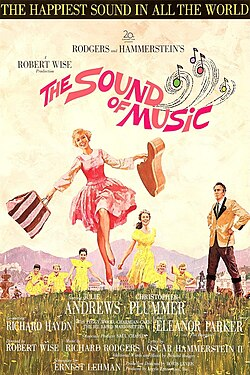
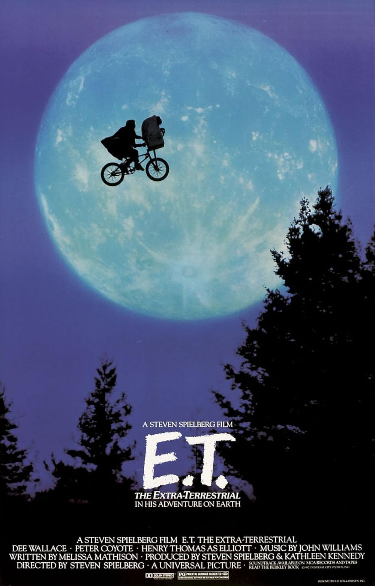
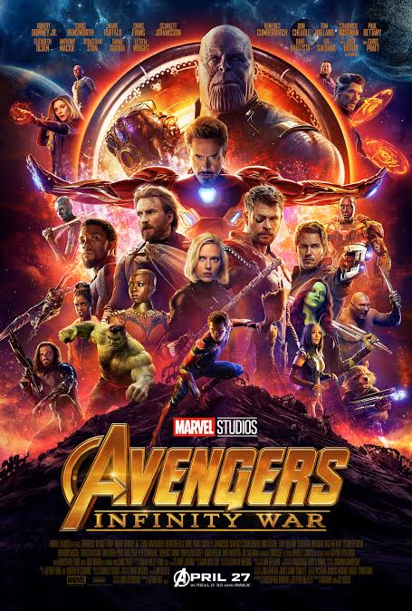
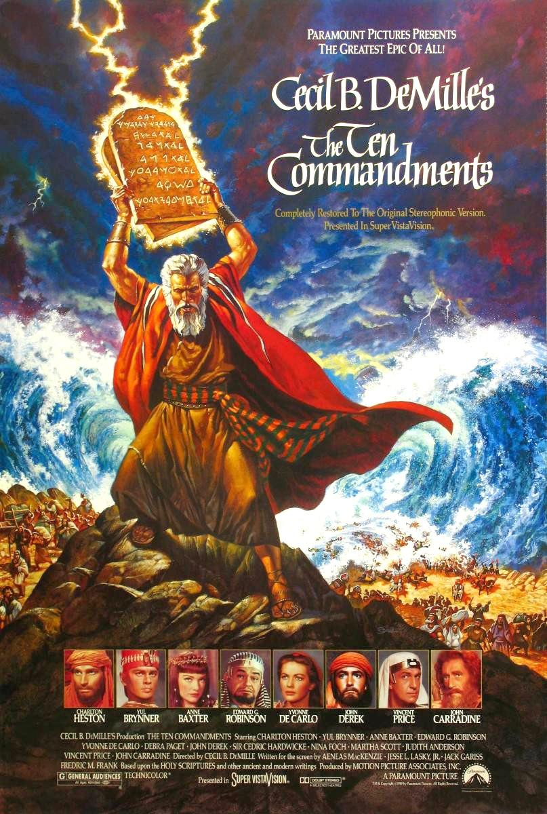
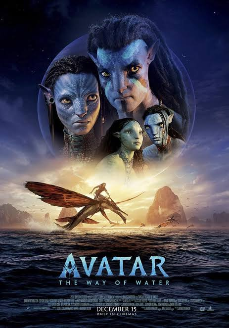

Top 10 populiariausių filmų istorijoje
1. Titanic (1997)
„Titanikas“ (1997 m.) – tai romantinė drama apie dviejų jaunuolių – Džeko ir Rouzės – meilės istoriją, kuri užsimezga prabangiame laive „Titanikas“. Tačiau jų laimę nutraukia tragiška laivo avarija, kai jis atsitrenkia į ledkalnį ir pradeda skęsti. Filmas pasakoja apie meilę, pasiaukojimą ir išgyvenimą. Jį režisavo Jamesas Cameronas.

2. Gone with the wind (1939)
„Vėjo nublokšti“ (1939 m.) – tai romantinė drama apie jauną, užsispyrusią merginą Skarlet O'Harą, kuri gyvena Amerikos pilietinio karo laikotarpiu. Filmas pasakoja apie jos meilę, išgyvenimus, netektis ir pastangas išlikti sunkiu istoriniu laikotarpiu. Tai istorija apie meilę, stiprybę ir viltį.

3. Avatar (2009)
„Avataras“ (2009 m.) – tai fantastinis filmas apie kareivį Džeiką, kuris atvyksta į tolimą planetą Pandorą. Ten jis susipažįsta su vietiniais gyventojais Na'vi ir įsimyli vieną iš jų. Džeikas turi pasirinkti, ar padėti žmonėms, ar apsaugoti Pandoros gamtą ir jos gyventojus. Filmas pasakoja apie meilę, gamtos saugojimą ir drąsą.

4. Avengers: Endgame (2019)
„Keršytojai: Pabaiga“ (2019 m.) – tai fantastinis veiksmo filmas apie superherojus, kurie po didžiulės nesėkmės bando išgelbėti pasaulį ir sugrąžinti prarastus žmones. Jie susivienija, kad įveiktų galingą priešą Taną. Filmas pasakoja apie draugystę, pasiaukojimą, drąsą ir kovą už pasaulio ateitį.

5. Star Wars: A New Hope (1977)
„Žvaigždžių karai: Nauja viltis“ (1977 m.)strong – tai fantastinis filmas apie jaunuolį Luką Skaivokerį, kuris prisijungia prie sukilėlių kovos prieš piktąją Galaktikos imperiją. Kartu su draugais jis bando išgelbėti princesę Lėją ir sunaikinti galingą Mirties žvaigždę. Filmas pasakoja apie drąsą, draugystę ir kovą už gėrį.

6. The Sound of Music (1965)

7. E.T. the Extra-Terrestrial (1982)

8. Avengers: Infinity War (2018)

9. The Ten Commandments (1956)

10. Avatar: The Way of Water (2022)
